- 회귀는 숫자(몇 ms 걸릴까?), 분류는 종류(실패할까?)를 맞히는 문제. 지표도 따로 쓴다 (RMSE ↔ F1).
- 선형회귀는 가중합, 로지스틱회귀는 확률, KNN은 가까운 이웃으로 예측한다.
- 모델 비교는 같은 분할 · 같은 입력 · 같은 지표에서 한 조건만 바꿔서. 고르는 건 valid, test는 끝까지 보관. 고른 Pipeline은 검사하고 저장한다.
본문에는 핵심 코드 한두 줄만 남겼어요.
📦 필요한 패키지
| 패키지 (pip 이름) | 뭐 하는 애? | 코드에서 |
|---|---|---|
scikit-learn | 모델(선형·로지스틱·KNN), 전처리, 지표, Pipeline 전부 | from sklearn.linear_model import LinearRegression 등 |
numpy | 숫자 배열 계산 (np.array, np.exp) | import numpy as np |
pandas | 표(DataFrame)로 데이터 읽고 비교표 만들기 | import pandas as pd |
joblib | 학습한 Pipeline을 파일로 저장·불러오기 (scikit-learn 설치 시 함께 깔림) | import joblib |
| (표준 라이브러리) | pathlib·tempfile — 저장 경로·임시 폴더 (설치 불필요) | from pathlib import Path, import tempfile |
🔧 설치 · 확인
python -m pip install numpy pandas scikit-learn # 새 환경이면 강사가 검증한 requirements로 준비
python --version
python -m pip show numpy pandas scikit-learn
python -c "import sklearn; print(sklearn.__version__)"
.venv\Scripts\python.exe -m pip check # Windows: 프로젝트 인터프리터로 의존성 충돌 확인scikit-learn으로 설치하고 코드에서는 sklearn으로 불러요..venv인지 먼저 확인하세요.root_mean_squared_error는 최근 버전에 생긴 함수). 같은 코드가 같은 숫자를 내려면 검증된 환경을 그대로 쓰는 게 안전해요.이거 어디에 써?
같은 데이터로도 질문을 두 가지로 만들 수 있어요. 예를 들어 AI 요청 기록이 있다면 "이 요청은 몇 ms 걸릴까?"(회귀)와 "이 요청은 실패할까?"(분류)를 따로 물을 수 있죠.
| 회귀 | 분류 | |
|---|---|---|
| 질문 | 실행에 몇 ms 걸릴까? | 실행이 실패할까? |
| 정답 y | 연속적인 숫자 (elapsed_ms) | 0=성공, 1=실패 (failed) |
| 모델 후보 | LinearRegression · KNN 회귀 | LogisticRegression · KNN 분류 |
| 주 지표 | RMSE (큰 오차를 중시) | 실패 클래스의 F1 |
elapsed_ms는 회귀의 정답은 될 수 있지만, "실행 전" 예측의 입력 X로 넣으면 안 돼요. 실행이 끝나야 알 수 있는 값이니까요. ID·실행 후 정보(status, retry_count)도 입력에서 빼요.① 선형회귀 — 입력의 가중합으로 숫자를 예측
공부시간(x)으로 점수(y)를 맞힌다고 해 봐요. 점들 사이에 가장 잘 맞는 직선 하나를 긋는 게 선형회귀예요.
예측 ŷ = w × x + b
w : 기울기 — x가 1 늘 때 예측이 얼마나 변하나
b : 절편 — x = 0일 때의 예측값
입력이 여러 개면 ŷ = w₁x₁ + w₂x₂ + … + b잔차 = 실제값 − 예측값 (점과 직선 사이의 세로 거리). fit은 이 잔차를 제곱해 더한 값(잔차제곱합)이 가장 작아지는 w와 b를 찾아요.
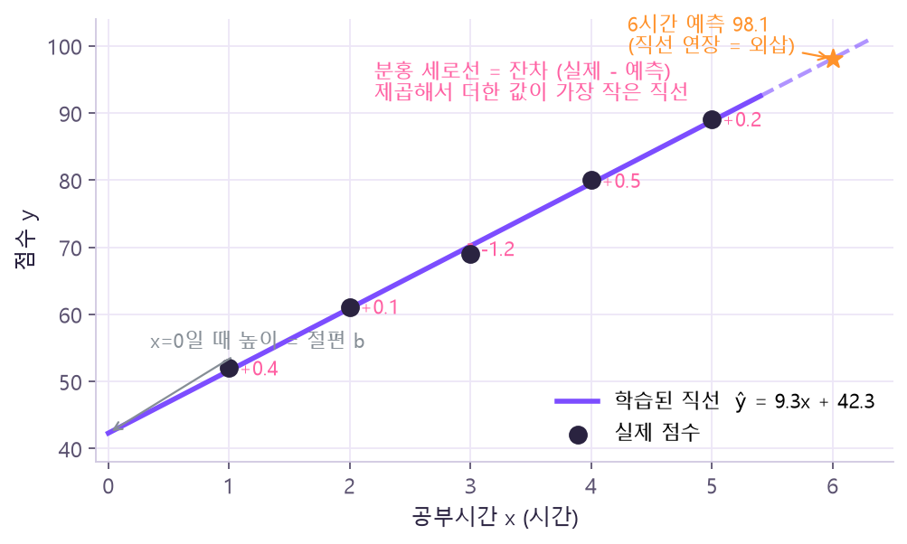
- 계수는 "다른 입력을 고정했을 때의 변화"일 뿐, 원인·결과의 증명이 아니에요.
- 단위가 다른 입력끼리 계수 크기만 보고 중요도를 비교하지 않아요.
- 학습 범위 밖을 예측하는 외삽은 믿기 어려워요.
LinearRegression() 명령어 사전에서 자세히 →model.fit(X, y)
print("6시간:", model.predict([[6]]).round(1)) # [98.1]② 회귀 지표와 기준선
데이터는 역할별로 나눠요: train(전처리·모델 학습) → valid(같은 규칙으로 예측해서 후보 비교) → test(최종 확인까지 보관).
| 지표 | 계산 핵심 | 해석 |
|---|---|---|
| MAE | |실제 − 예측|의 평균 | 정답과 같은 단위 · 작을수록 좋음 |
| MSE | (실제 − 예측)²의 평균 | 단위가 제곱됨 · 큰 오차에 더 큰 벌점 |
| RMSE | MSE의 제곱근 | 정답과 같은 단위 · 큰 오차에 민감 |
| R² | 1 − 잔차제곱합 / 전체제곱합 | 최대 1 · 음수도 가능 · 오류 비율이 아님 |
MAE와 RMSE가 다른 선택을 할 때
| 모델 | 오차 | MAE | RMSE |
|---|---|---|---|
| A | 0, 0, 100 (큰 실수 1번) | 33.33 | 57.74 |
| B | 40, 40, 40 (고르게 조금씩) | 40.00 | 40.00 |
MAE로 보면 A, RMSE로 보면 B가 나아요. "큰 실패 한 번"을 더 피해야 하는 업무라면 RMSE 관점이 필요해요. 그래서 주 지표는 미리 정하고, 둘 다 기록해요.
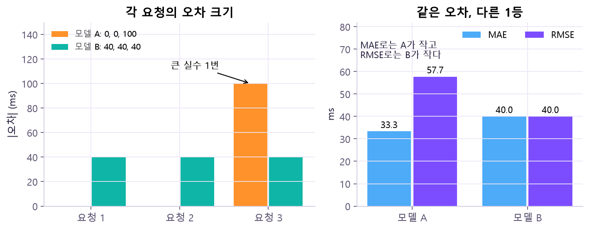
R²가 음수라는 뜻
R²의 기준은 "평가 자료의 y 평균을 항상 예측하는 경우"예요. 내 모델의 제곱 오차가 그 기준보다 크면 R²는 0보다 작아져요. 코드가 틀렸다는 뜻이 아니라, 평균만 찍는 것보다도 못하다는 뜻이에요.
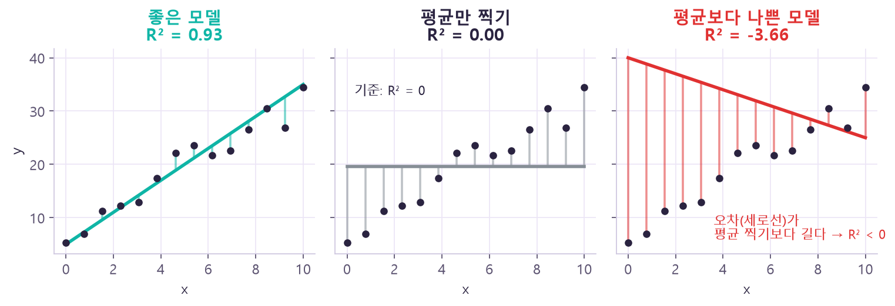
DummyRegressor(strategy="mean")는 train의 평균만 계속 예측하는 "아무것도 안 배운 모델"이에요. 새 모델은 최소한 이것보다는 나아야 의미가 있어요. Dummy는 train 평균을 배우고 R²는 valid 평균을 기준으로 하니, Dummy의 valid R²가 꼭 0은 아니에요(이 자료에선 −0.162).print("MAE:", round(mean_absolute_error(y_true, y_pred), 2)) # 33.33
print("RMSE:", round(root_mean_squared_error(y_true, y_pred), 2)) # 38.3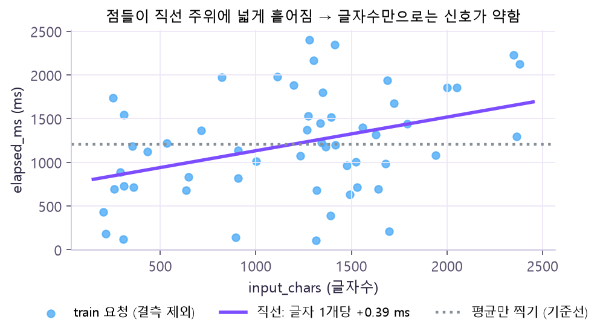
③ 로지스틱회귀 — 이름은 회귀지만 분류 모델
입력으로 실패(1)일 가능성을 0~1 사이 확률로 추정하고, 그 확률을 기준(임계값)과 비교해 클래스를 정해요.
z = w₁x₁ + … + b→ 시그모이드
p = 1 / (1 + e−z)→ 판단 규칙
p ≥ 0.5 → 1
z = -2.0 → p = 0.119 → 0 (성공)
z = 0.0 → p = 0.500 → 1 (규칙이 p ≥ 0.5이면)
z = 2.0 → p = 0.881 → 1 (실패)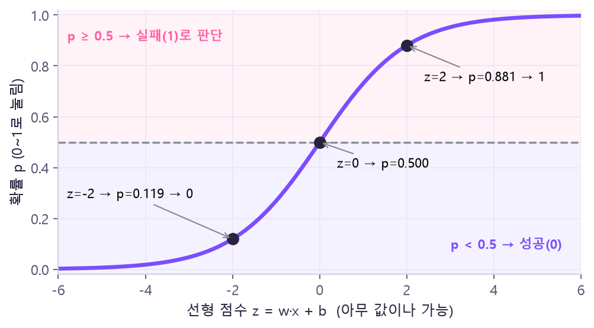
C로 조절).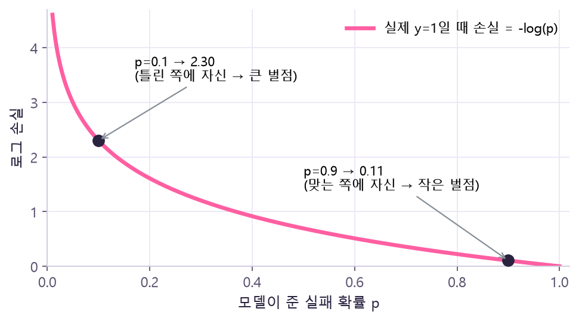
혼동행렬 — 오류 두 종류를 나눠 읽기
실패(1)를 양성으로 정해요. 행 = 실제, 열 = 예측.
| 예측 성공(0) | 예측 실패(1) | |
|---|---|---|
| 실제 성공(0) | TN 10 | FP 4 — 괜히 경고 (불필요한 점검) |
| 실제 실패(1) | FN 4 — 놓침 (문제를 못 잡음) | TP 2 |
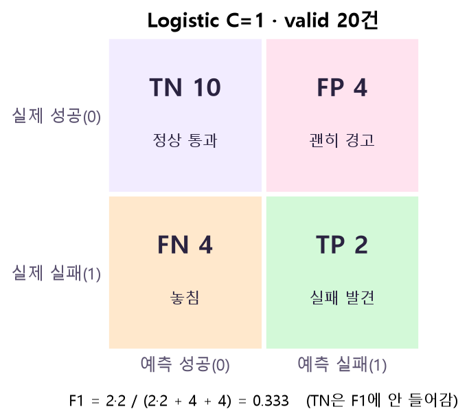
| 지표 | 계산 | 위 예시 |
|---|---|---|
| Accuracy | (TP + TN) / 전체 | 12 / 20 = 0.600 |
| Precision | TP / (TP + FP) — 경고한 것 중 진짜 실패 | 2 / 6 = 0.333 |
| Recall | TP / (TP + FN) — 진짜 실패 중 찾은 것 | 2 / 6 = 0.333 |
| F1 | 2TP / (2TP + FP + FN) | 4 / 12 = 0.333 |
clf = build(LogisticRegression(C=1.0, max_iter=1000)) # build = 전처리+모델 Pipeline (⑤ 참고)
p = clf.predict_proba(X_valid)[:, pos] # 실패 확률pred = (p >= threshold).astype(int) # True/False → 1/0
tn, fp, fn, tp = confusion_matrix(truth, pred, labels=[0, 1]).ravel()아래 슬라이더로 임계값을 움직여 보세요. 명령어 사전 코드의 6건(실제 [0, 0, 0, 1, 1, 1], 확률 [0.10, 0.40, 0.70, 0.35, 0.60, 0.90])을 그대로 씁니다.
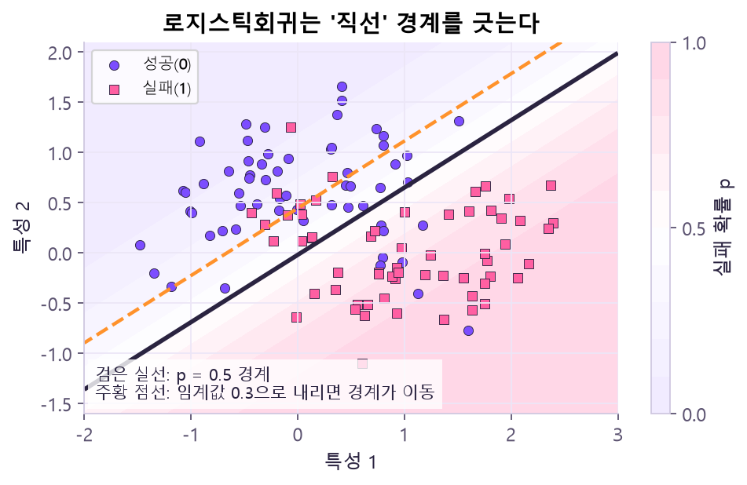
④ KNN — 가까운 학습 사례를 보고 예측
KNN(K-최근접 이웃)은 "나랑 제일 비슷한 K개는 뭐였지?"를 보는 모델이에요.
모든 학습 자료와→ K개 이웃
가장 가까운 것→ 분류: 투표
회귀: 평균
예: 학습 x = [1, 2, 4, 7, 9], 라벨 = [0, 0, 1, 1, 1], 새 값 3.2, K=3 → 이웃은 4, 2, 1 (거리 0.8, 1.2, 2.2), 라벨 1, 0, 0 → 투표로 0.
fit은 학습 자료를 기억만 하고, 진짜 일은 predict 때(이웃 찾기) 해요. 선형회귀처럼 학습되는 계수 w는 없지만, 학습 사례를 저장한 "fitted 상태"는 있어요. 정답 y는 거리 계산에 넣지 않아요.아래에서 ⭐ 새 요청을 끌어 보세요. 가로축(글자수)은 수백~수천, 세로축(허용 도구수)은 1~5라 단위가 크게 달라요. 표준화를 켜고 끄면 이웃이 바뀌는 걸 볼 수 있어요.
knn = KNeighborsClassifier(n_neighbors=3).fit(X, [0, 0, 1, 1, 1])
distance, index = knn.kneighbors([[3.2]]) # 이웃까지 거리, 학습 행 번호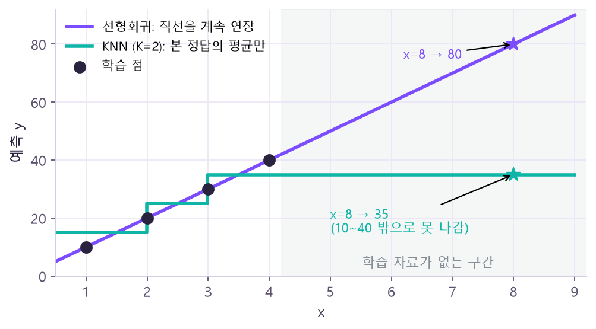
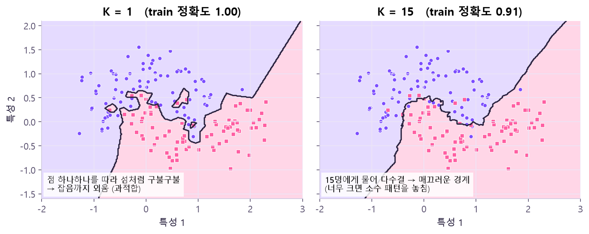
⑤ 스케일링과 Pipeline
KNN은 거리로 판단하니까 단위가 결과를 바꿔요.
| 글자수 | 허용 도구수 | 클래스 | |
|---|---|---|---|
| 학습 A | 1000 | 1 | 0 |
| 학습 B | 1400 | 4 | 1 |
| 새 요청 Q | 1100 | 4 | ? |
원래 단위로는 글자수 차이(100 vs 300)가 거리를 지배해서 Q는 A에 가까워요. train 기준으로 표준화하면 도구수 차이도 반영돼 B에 가까워져요.
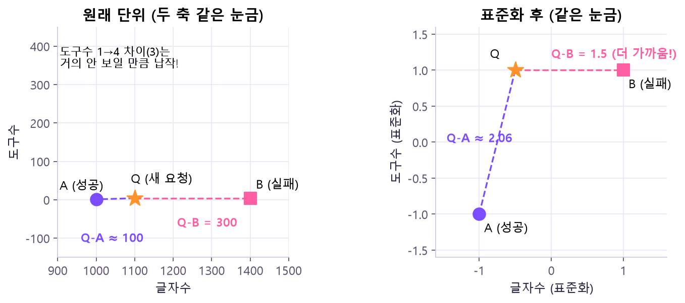
import numpy as np
from sklearn.preprocessing import StandardScaler
from sklearn.neighbors import KNeighborsClassifier
X = np.array([[1000, 1], [1400, 4]])
y = np.array([0, 1])
q = np.array([[1100, 4]])
raw = KNeighborsClassifier(n_neighbors=1).fit(X, y)
s = StandardScaler().fit(X) # train 평균·표준편차 저장
scaled = KNeighborsClassifier(n_neighbors=1)
scaled.fit(s.transform(X), y)
print("원단위:", raw.predict(q).tolist()) # [0]
print("표준화:", scaled.predict(s.transform(q)).tolist()) # [1] 같은 규칙으로 q도 변환| 용어 | 무엇을 바꾸나 | 대표 예 |
|---|---|---|
| 표준화 | 각 특성에서 평균을 빼고 표준편차로 나눔 | StandardScaler |
| 최소–최대 스케일링 | train의 최소·최대로 0~1 범위로 | MinMaxScaler |
| 벡터 정규화 | 각 행의 길이를 1로 | Normalizer |
| 규제 (Regularization) | 큰 계수에 벌점을 주어 학습을 제어 (스케일링 아님!) | 로지스틱회귀의 C |
StandardScaler는 데이터를 정규분포로 만들지 않아요. 위치와 크기만 바꾸는 선형 변환.MinMaxScaler로 바꿔도 새 값은 0~1 밖일 수 있어요 (train 범위 100~300에서 500 → 2.0).- 스케일링은 단위의 과도한 영향을 줄이는 것이지, 점수 상승을 보장하지 않아요.
import numpy as np
from sklearn.preprocessing import StandardScaler, MinMaxScaler
X = np.array([[100], [200], [300]])
a = StandardScaler().fit(X)
b = MinMaxScaler().fit(X)
print("표준화:", a.transform(X).ravel().round(3).tolist()) # [-1.225, 0.0, 1.225]
print("MinMax:", b.transform(X).ravel().tolist()) # [0.0, 0.5, 1.0]
print("새값500:", b.transform([[500]]).ravel().tolist()) # [2.0]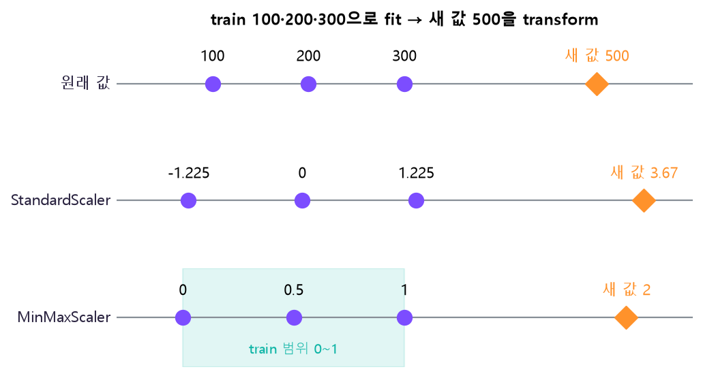
수치형·범주형은 각자의 길로
4개 열→ 수치 2열
중앙값 대체 → 스케일링
범주 2열
최빈값 대체 → One-hot→ 합치기
8개 특성→ 모델
회귀 / 분류
Pipeline이 해 주는 일: fit(train) = 전처리 fit_transform → 모델 fit, predict(valid) = 전처리 transform만 → 모델 predict. 그래서 valid·test의 통계가 학습에 섞이지 않아요.
fit은 train에서만, predict는 transform만 하도록 자동으로 지켜져서 valid·test 정보가 새어 들어갈 틈이 없어요.pre = ColumnTransformer([("num", num, NUM), ("cat", cat, CAT)])
model = build(KNeighborsClassifier(n_neighbors=5), scale="standard")⑥ 하이퍼파라미터와 공정한 모델 비교
| 구분 | 예 | 어떻게 정하나 |
|---|---|---|
| 학습 파라미터 | 선형·로지스틱회귀의 계수, 절편 | train에 fit해서 자동으로 |
| 하이퍼파라미터 | K, weights, p, C | 사람이 후보를 정하고 valid로 비교 |
| 전처리 선택 | Standard / MinMax / 없음 | 실험 조건으로 적고 비교 |
| 판단 정책 | 실패 확률의 임계값 | 오류 비용과 valid를 보고 결정 |
실험 전에 적어 둘 것: 고정 조건(같은 train 60/valid 20, 같은 4열, 중앙값·표준화 + 최빈값·원핫, weights=uniform · p=2) · 후보(K = 1, 3, 5, 9, 15) · 선택 규칙(분류는 valid F1 최대, 회귀는 valid RMSE 최소, 동점이면 작은 K).
| K | 분류 train F1 | 분류 valid F1 | 회귀 valid RMSE (ms) |
|---|---|---|---|
| 1 | 1.000 | 0.400 | 944.68 |
| 3 | 0.571 | 0.545 | 795.22 |
| 5 | 0.462 | 0.200 | 744.99 |
| 9 | 0.519 | 0.000 | 707.65 |
| 15 | 0.364 | 0.000 | 641.79 |
- K=1 train 1.000 / valid 0.400 — train에선 자기 자신이 이웃이라 만점. 새 자료에선 이웃 하나의 잡음을 그대로 따라가서 떨어져요(과적합 신호).
- K=9·15 분류 valid 0.000 — 실패는 소수(valid 20건 중 6건)라, 이웃을 많이 모을수록 다수인 "성공" 표가 이겨서 실패를 한 번도 예측하지 못해요. 그래서 실패 F1이 0이 돼요.
- 회귀는 K가 클수록 RMSE↓ — 많은 이웃의 평균은 극단적인 값을 덜 내는 "무난한" 예측이 돼서 큰 오차가 줄어요. RMSE는 큰 오차에 민감하니 유리해져요. 목표가 다르면 최적 K도 달라지는 이유예요.
- 실제 곡선은 매끄럽거나 단조롭지 않을 수 있어요(train F1도 K=5 0.462 → K=9 0.519로 오르내림). K=3은 이 고정 실험 안의 잠정 선택이에요.
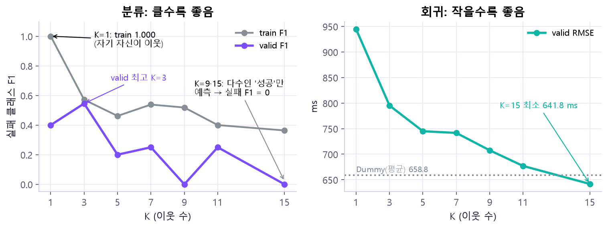
지표로 진단하기
| 이렇게 나오면 | 의심할 것 |
|---|---|
| train은 좋은데 valid는 크게 나쁨 (K=1: 1.000 vs 0.400) | 과적합 |
| 설정을 조금만 바꿔도 valid가 크게 흔들림 | 표본이 작음 (valid 20건에서 1건 = Accuracy 0.05) |
| 점수가 낮음 | 곧 과적합은 아님 → 누수·라벨·분할, 신호 부족, 분포 차이 먼저 확인 |
| 새 모델이 Dummy와 비슷함 | 입력에 쓸 만한 신호가 부족할 수 있음 (먼저 누수·라벨·분할 문제부터 확인) |
model = build(KNeighborsClassifier(n_neighbors=k)) # 매번 새 Pipeline
va = f1_score(y_valid, model.predict(X_valid), zero_division=0)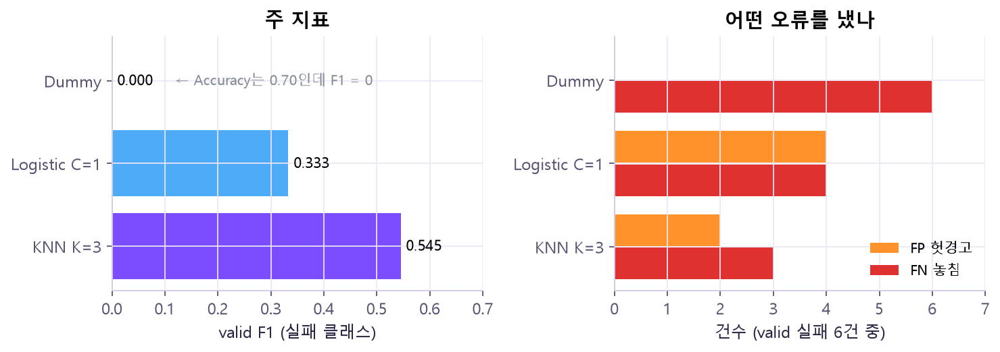
⑦ 자동 검사 · 저장과 복원
고른 Pipeline이 "에러 없이 돌았다"만으로는 부족해요. 예측이 학습 통계를 바꾸지 않는지, 입력 열이 약속대로인지 확인하고, 저장한 뒤 다시 불러도 같은 예측이 나오는지 대조해요.
statistics_에 기억해요. 만약 predict 때 이 값이 바뀐다면 valid 정보가 규칙에 섞였다는 뜻(누수)이에요. 저장·복원 대조는 "내 컴퓨터에서 나온 결과를 나중에도, 다른 사람도 똑같이 재현할 수 있나"를 확인하는 거예요.before = imp.statistics_.copy() # 중앙값을 따로 복사해 보관
print("통계 불변:", np.array_equal(before, after)) # Truejoblib.dump(model, path) # 전처리 + 모델을 통째로 저장
restored = joblib.load(path) # 본인이 만든 파일만 읽기원본 자료
- 강의:
20261026월_머신러닝_회귀_분류_KNN_모델비교_Day6 (2).pdf— ① 선형회귀 10~14쪽 · ② 회귀 지표 15~23쪽 · ③ 로지스틱·분류 지표 24~35쪽 · ④ KNN 36~43쪽 · ⑤ 스케일링·Pipeline 44~54쪽 · ⑥ 비교 55~69쪽 · ⑦ 검사·저장 72~73, 77쪽 - 공식 문서: scikit-learn · Linear models · Nearest neighbors · Metrics and scoring · Common pitfalls